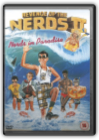
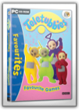
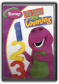

|
The Wizard Of OZ

Revenge Of The Nerds Ii [DVD]

Favourites Teletubbies Favourite Games

Avanquest Software
Crafted with brilliant colours and the lazy-summer-day pace of the celebrated series, Teletubbies 2: Favourite Games delivers the goods for the toddler set. From the first scene, where the baby-face sun rises across the computer screen, kids will be entranced. Parents will like it too—mostly for the developmental skills the teletubbies teach.The CD-ROM is based around five games, including "Tuning In," "Gymnastic," and "Making Tubby Custard" (which features appropriately silly sound effects). "Hide and Peep" takes the traditional hide and seek game and adds bright red curtains. "Roly Poly" was a particular favourite; when you click on a teletubby it sends Laa-Laa, Tinky Winky, Dipsy, and Po rolling down gorgeous green hills. A very big pointer triggers the game's actions, and children should be able to use it easily in developing computer skills. These games also help children to learn how to match (from the hiding game) and create ordered sequences (in the case of the custard game). In addition, the game designers have built in considerate additions for the recommended age group, two to four years old. For example, to quit the game parents need to hit the escape key—a good choice for little fingers that might otherwise click an exit icon by mistake. Charming and colourful—like the television show come to life—Teletubbies 2: Favourite Games will please and delight. —Simon Priestly Barney: It's Time for Counting

Laura Cargile
51 min. Widescreen; Soundtrack: English Dolby Digital stereo; Subtitles: English; bonus episode "A Counting We Will Go."
|


My Library
Collection Total:
199 Items
199 Items
Last Updated:
Sep 29, 2012
Sep 29, 2012
 Made with Delicious Library
Made with Delicious Library